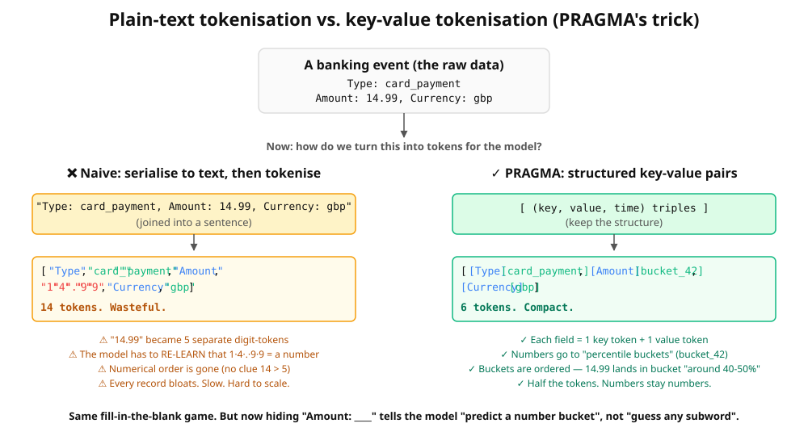
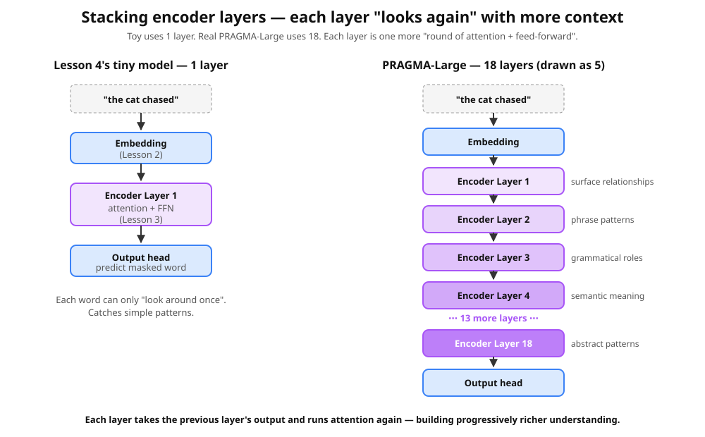

Lesson 5 — pragma_mini.py line by line
Re-read every line of the toy with full understanding. Each line tagged with the lesson concept it uses.
Sections of pragma_mini.py

pragma_mini.py is exactly this pipeline in code — embed, stack attention+feed-forward, then a head.Sec 1 Vocabulary L2
First, the plain idea. A banking event isn't a sentence — it's a little form, a set of fields paired with their values: merchant = Tesco, amount = 14.99, type = groceries. The trick we're about to build keeps each pair intact: one token for the field name (the key), one token for its contents (the value). That's why it's called key-value tokenisation — and here's the vocabulary for a toy version with pets instead of merchants:
KEYS = ["pet", "action", "place"]
VALUES = ["dog", "cat", "fish",
"eat", "sleep", "play",
"garden", "couch", "bowl"]
PAD, MASK = "<pad>", "<mask>"
vocab = [PAD, MASK] + KEYS + VALUES
tok2id = {t: i for i, t in enumerate(vocab)}
V = len(vocab)The token IDs are built exactly as in Lesson 2 — what's new is only that the tokens split into the two groups we just described: KEYS are the field names, VALUES are the contents. This is the same key-value tokenisation PRAGMA uses for real structured banking data:

Sec 2 The synthetic data
RULES = {
"dog": {"action": ["eat", "play"], "place": ["garden", "bowl"]},
"cat": {"action": ["sleep", "play"], "place": ["couch", "bowl"]},
"fish": {"action": ["eat", "sleep"], "place": ["bowl"]},
}Plain Python — no ML yet. The model never sees RULES. It has to back the structure out of training examples.
Sec 3 Encoding an event L2
Same first move as Lesson 2: every token gets an ID, and each ID later looks up a row in the embedding table. Here the "words" are just our event's keys and values.
def encode(event):
ids = []
for k, v in event:
ids.append(tok2id[k])
ids.append(tok2id[v])
return idsTurn an event into a flat list of token IDs. Key, value, key, value, …
Each section below is tagged with the earlier lessons it builds on — here's the key:
L1 — training loop L1b — arch vs training L1c — gradient descent L1.5 — neural nets & FFN L2 — tokens & embeddings L3 — attention L3b — why transformers L4 — MLM
Sec 4 Masking L4
def mask(ids, p=0.25):
ids = list(ids)
labels = [-100] * len(ids)
for i, t in enumerate(ids):
if vocab[t] in KEYS: # keep field names visible
continue
if random.random() < p:
labels[i] = t # remember truth
ids[i] = tok2id[MASK] # hide it
return ids, labelsThe fill-in-the-blank game from L4. labels[i] = -100 on unmasked positions tells the loss "don't score this position".
vocab = ["<pad>","<mask>", "pet","action","place", "dog","cat","fish", "eat","sleep","play", "garden","couch","bowl"] event = [("pet", "dog"), ("action", "eat"), ("place", "garden")] ids = encode(event) # key, value, key, value, key, value hide_value_of = "pet" # we only ever mask VALUES, never KEYS ids, labels = mask_one(ids, hide_value_of) print(f"ids: {ids}") print(f"labels: {labels}")
- Pick
dog, hide theactionvalue. Which id becomes<mask>(id 1)?Show answer & explanation
The event is
[(pet,dog),(action,eat),(place,garden)]→ ids[2,5,3,8,4,11]. Position 3 (theeatid, 8) becomes<mask>(1), andlabels[3] = 8. The model must guess "eat" from "this is a dog whose place is garden". The KEY tokenaction(id 3) stays visible — the model always knows WHICH field is blank, just not its value. - Notice the ids alternate key, value, key, value. Why keep the keys visible?
Show answer & explanation
Because a banking event is structured — "amount: 14.99" means something different from "merchant: 14". The key tells the model what KIND of thing the blank is. Hiding the value but keeping the key is like a fill-in-the-form quiz: "Pet's action: ____" — you know it's an action, you just have to guess which.
- Pick
fish. Its only valid place isbowl. If you hide the place value, how confident should the model be?Show answer & explanation
Very confident →
bowl. In the secretRULES, fish only ever appears withplace: bowl. After training, the model learns this rule and will predict bowl with near-100% probability whenever it sees a masked place value for a fish. That's the model discovering structure we never told it directly.
encode() and mask() are in lesson_05_pragma_mini.ipynb — run them inside the training loop with torch.
Sec 5 The architecture L1b L2 L3 L1.5
class PragmaMini(nn.Module):
def __init__(self, V, d=32, heads=2, layers=2):
super().__init__()
self.emb = nn.Embedding(V, d) # (a)
self.pos = nn.Embedding(64, d) # (b)
layer = nn.TransformerEncoderLayer(d, heads, 64, batch_first=True)
self.enc = nn.TransformerEncoder(layer, layers) # (c)
self.head = nn.Linear(d, V) # (d)
def forward(self, x):
positions = torch.arange(x.size(1), device=x.device)
h = self.enc(self.emb(x) + self.pos(positions)) # (e)
return self.head(h) # (f)| Piece | Lesson | What it does |
|---|---|---|
(a) nn.Embedding(V, d) | L2 | Embedding table. 14 × 32 = 448 knobs. |
(b) nn.Embedding(64, d) | (positional) | Position embeddings — so the model knows order. |
(c) TransformerEncoder(...) | L3 attn + L1.5 FFN, stacked ×2 | 2 layers of (attention + FFN). Attention happens in EVERY layer. |
(d) nn.Linear(d, V) | (MLM head) | Project context vectors back to vocab scores. |

Sec 6 Training L1 L1c L4
for step in range(2000):
batch = [random_event() for _ in range(32)]
masked, labels = zip(*[mask(encode(e)) for e in batch])
x = torch.tensor(masked)
y = torch.tensor(labels)
logits = model(x) # 1. guess
loss = loss_fn(logits.reshape(-1, V), y.reshape(-1)) # 2. wrongness
opt.zero_grad(); loss.backward(); opt.step() # 3, 4, 5The same 5-line loop you've seen all course. loss.backward() nudges thousands of knobs across embedding, position, attention, FFN, and head.
Sec 7 Inference
Inference is just training run backwards: instead of hiding a value so the model can learn, you hide the value you actually want to know and let the trained model fill in the blank. Here's the whole thing in a few lines of Python:
def guess(event, hide_key):
ids = encode(event)
for i in range(0, len(ids), 2):
if vocab[ids[i]] == hide_key:
pos = i + 1
ids[pos] = tok2id[MASK]
with torch.no_grad():
logits = model(torch.tensor([ids]))
return vocab[logits[0, pos].argmax().item()]Real What "real PRAGMA" adds on top
1. Smarter tokenisation by value type
Numerical values get bucketed by percentile. Categorical = single token. Text = BPE subwords. Each value type kept on its own terms.
2. Time encoding
Every event has a timestamp. PRAGMA encodes time two ways:
- Log-seconds since the previous event — compresses years while preserving second-level precision for recent activity.
- Calendar features — hour-of-day, day-of-week, day-of-month with sine/cosine — letting the model learn cycles (Friday-night spending, monthly salaries).
3. Three encoders instead of one
- Profile State Encoder — static info (region, plan, balance bucket).
- Event Encoder — each event independently.
- History Encoder — looks across the whole event sequence.
4. Depth
| Model | d_model | Encoder layers (P/E/H) | Heads | Total params |
|---|---|---|---|---|
| Our toy | 32 | – / 2 / – | 2 | ~20,000 |
| PRAGMA-S | 192 | 1 / 5 / 2 | 3 | 10 M |
| PRAGMA-M | 512 | 3 / 16 / 6 | 8 | 100 M |
| PRAGMA-L | 1024 | 9 / 45 / 18 | 16 | 1 B |
5. Smarter masking strategies
- Token-level (~15%) — like our toy.
- Event-level (~10%) — hide a whole event.
- Key-level (~10%) — hide all values of a key everywhere.
6. Downstream adaptation
- Embedding probe — freeze encoder, add tiny classifier on top.
- LoRA fine-tuning — instead of retraining the whole model, swap in a tiny set of adapter weights (~2-4% of the model) via low-rank adapters.
Next: see one more realistic worked example before the capstone.
- Banking events become key+value tokens so structure and magnitude survive.
- It's the same pipeline you built: embed → attention → head, trained by masking.